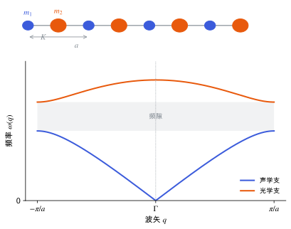

声子与晶格动力学
谐振近似下的力常数和动力学矩阵，声子色散、声学和光学支，虚频的含义，以及超胞有限位移法。
直观阅读需要
- 弹簧振子与简正模
- 倒空间、布里渊区与 k 点采样：波矢在布里渊区中取值
只是提示，不需要先读完才能往下看。
直觉直观解释
原子在平衡位置附近振动。位移小时，能量近似是位移的二次函数，原子之间像是用弹簧连起来，这就是谐振近似 (harmonic approximation)。
晶体有平移对称性，所以振动的简正模可以用波矢 \mathbf{q} 标记，每个模是一种“所有晶胞以相位 \mathrm{e}^{i\mathbf{q}\cdot\mathbf{R}} 一起振动”的集体运动。量子化后的简正模就是声子。
每个 \mathbf{q} 有 3N 个模（N 是每胞原子数）：
- 3 支声学支：\mathbf{q}\to 0 时频率趋于 0，对应整体平移；长波极限下就是声波，斜率是声速，与弹性常数相关（见 弹性张量）。
- 3N-3 支光学支：\mathbf{q}\to 0 时频率不为零，胞内原子相对振动。
虚频（\omega^{2} < 0）表示能量沿该模方向是下降的，结构不在极小点，而在鞍点上。

| 符号 | 是什么 | 图里对应 |
|---|---|---|
| m_1, m_2 | 两种原子的质量（m_1 < m_2） | 蓝色小球、橙色大球 |
| K | 最近邻弹簧常数 | 小球之间的弹簧 |
| a | 晶格常数（一个晶胞含两个原子） | 上图标注的长度 |
| q | 声子波矢，取值 -\pi/a 到 \pi/a | 下图横轴 |
| \omega | 振动角频率 | 下图纵轴 |
| 频隙 | \sqrt{2K/m_2} 到 \sqrt{2K/m_1} 之间没有模 | 下图阴影带 |
定义与公式数学与推导
双原子链
对图中的模型，
\omega_\pm^{2}(q) = K\left(\frac{1}{m_1}+\frac{1}{m_2}\right) \pm K\sqrt{\left(\frac{1}{m_1}+\frac{1}{m_2}\right)^{2} - \frac{4\sin^{2}(qa/2)}{m_1 m_2}}
其中“−”是声学支，“+”是光学支。在 q=\pi/a 处两支分别为 \sqrt{2K/m_2} 和 \sqrt{2K/m_1}，两者之间就是频隙。
LO–TO 劈裂
在离子晶体（极性晶体）中，长波纵光学模 (LO) 伴随宏观电场，频率高于横光学模 (TO)。这一非解析项由 Born 有效电荷和电子介电张量决定，所以算极性晶体的 Γ 点附近声子时需要 Z^{*} 和 \varepsilon^{\infty}（见 介电张量与玻恩有效电荷）[Baroni 2001]。
两种计算方法
- 超胞有限位移法：在超胞中把一个原子挪一点，用 Hellmann–Feynman 定理：力与应力 力得到力常数；超胞越大，能准确得到的 q 点越多。phonopy 是常用实现 [Togo & Tanaka 2015]。
- DFPT：直接对任意 \mathbf{q} 求二阶导数，不需要超胞（见 微扰理论与线性响应）[Baroni 2001]。
在本研究线里的样子对应与边界
- 压电的离子贡献：钳位离子压电张量加上离子弛豫贡献才是完整的 e_{ij}。离子贡献要用 Γ 点力常数（也就是 Γ 点光学模）和 Born 电荷、内应变，软的光学模贡献大（见 压电张量）。
- 稳定性检查：优化后的 β-甘氨酸结构若在 Γ 点出现明显虚频，说明不在极小点，压电结果不可靠。常见原因是优化不够充分或力收敛太松。
- 自由能与温度：声子态密度给出零点能和振动自由能，用于多晶型排序和准简谐近似（见 自由能与熵 与 准简谐近似与热膨胀）。
- MLIP 验证：用 MACE 算声子并与 DFT 比较，是检查势函数二阶导数是否可靠的常用方式（见 MACE 与等变消息传递）。
常见坑对应与边界
- 小虚频就当成不稳定：Γ 点附近的极小虚频可能来自数值噪声（求和规则破坏、FFT 网格、超胞太小），先提高精度再下结论。
- 位移步长不合适：太小会被 SCF 噪声淹没，太大会混入非谐效应；常用默认约 0.01 Å，按需检查。
- 极性晶体不加非解析修正：Γ 点附近的 LO 支会错。
- 超胞太小：长程力常数被截断，色散曲线在布里渊区内部失真。
检验自己对应与边界
参考资料
论文Togo & Tanaka 2015
尚未实际查阅，目前只是拟查阅书目
论文Baroni 2001
尚未实际查阅，目前只是拟查阅书目
教材Martin 2020
尚未实际查阅，目前只是拟查阅书目
分类晶体与固体 · 概念 · 状态：草稿